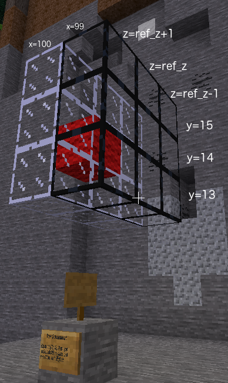

for loopThe previous example was a lot of typing to place 9 blocks. Is there an easier way?
Place 9 obsidian glass blocks in a square at x = 99. Centre of square is y = 14 and z = your player z value from Minetest. This will partially complete Minetest Task 3 which you can read on your sign in Minetest.
In the previous example we needed
nine build commands to place nine blocks.
Doing repetitive tasks is what computers are good at. If we are repeating the same task several times we tell the
computer to run in a loop until the task has been done the correct number of times. Unfortunately the task was
slightly different each time. Let's look at six of the commands in a slightly different order.
mc.build(99, 13, ref_z - 1, glass)mc.build(99, 13, ref_z + 1, glass)mc.build(99, 14, ref_z - 1, glass)mc.build(99, 14, ref_z + 1, glass)mc.build(99, 15, ref_z - 1, glass)mc.build(99, 15, ref_z + 1, glass)There are three pairs of commands which are almost the same except the y coordinate is different each time. This is where a for
can be used. We use a variable, in this case y which has a different value each time through the
loop. We start the loop with
for variable name in sequence:
The sequence is the list of values to use for that variable each time through the loop. All the lines to be repeated in the loop are indented. The loop ends when the indentation finishes. For example:
for y in (13, 14, 15):
print(y)print("finished")will have the following output
13 14 15 finished
The six lines above can be replaced with three lines.
for y in (13, 14, 15):mc.build(99, y, ref_z - 1, glass)mc.build(99, y, ref_z + 1, glass)